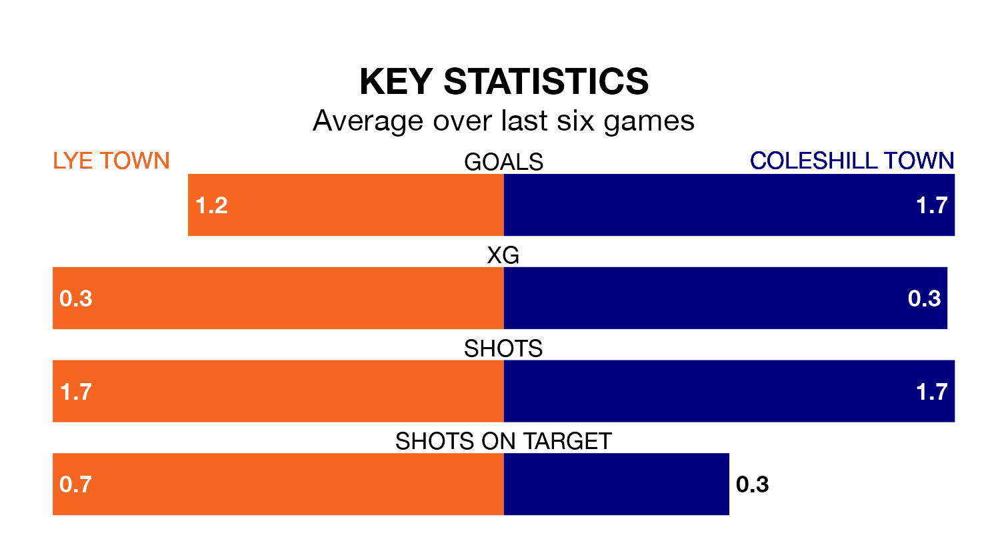

Coleshill Town travel to Lye Town on Saturday in Northern Premier League Division One Midlands.
The visitors come into the game on the back of a draw in their last match, having tied with Corby Town 2-2 at home.
Lye also drew their last match, 1-1 against Anstey Nomads.
With 33 goals in 23 games so far this season, Lye are scoring at below the league average rate with 1.4 goals per game. But they are conceding fewer than average too, letting in 29 goals at a rate of 1.3 per game.
Coleshill, meanwhile, are above average scorers, with 1.6 goals per game, compared to a league average of 1.5. They have conceded 2.0 goals per game.
Lye Town are sixth in the table after 23 games, of which they have won 11 and drawn five, earning 38 points.
Coleshill Town are seven places behind the home team in 13th, with eight wins and four draws putting them on 28 points.
Lye are in mixed form in Northern Premier League Division One Midlands, with two wins and a draw from their last six games.
With two wins and two draws over that period, the visitors' form is slightly better – they have taken eight points from 18, compared to Lye's seven.
Updated: 10:50, 10/01/24